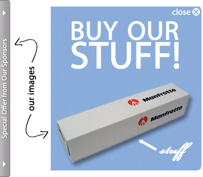

Advertisements on the web: love them or hate them, it’s safe to say they’re here to stay for a good long while. But advertising is a tough line to walk for a lot of websites (such as this one). Make your ads too annoying, and you’ll lose readership. But make them too unobtrusive, and you might as well not even have them at all. So where’s the balance?
Today I’d like to start an article series of three parts, the result of which will be a popout-style, jQuery-based box like the one pictured above, which I think strikes a nice balance on the obtrusion-scale. A friend of mine and I first developed this box to contain advertisements, but it’s a pretty versatile little technique: we’ve also used it to hold signup forms, and it could be expanded to other uses fairly easily.
If you’d like to see this popout ad in action, click here.
So what’s the benefit of this little popout box? First of all, it’s pretty simple to set up. In today’s article, I’ll cover the XHTML and CSS necessary to build this popout box, and you’ll see that it doesn’t take as much code as you might expect.
Second, it’s an eye-catching, yet not entirely annoying, technique. The ad opens after the page loads, which tends to draw the reader’s eye that direction. But if the ad isn’t for them, they can just click the close button and move it out of the way. Part 2 of this series will cover the jQuery used to make the ad function as prescribed.
Third, the technique easy to customize for your specific needs. In part 3 of this series, I’ll cover adding cookie support (to remember whether the ad should be open or closed) using a great jQuery plugin, generalizing your CSS to support both left- and right-aligned boxes with just one stylesheet, and even supporting multiple ads on the same page, should you decide to push the envelope.
Intrigued? Great! Let’s dive in to part 1.
The Images Required

Depending on how you’re using the box, you’ll need some images. For mine, I’m using two images. The first image functions as the ad “cap,” which is permanently affixed to the side of the page. Clicking this image will, once we’ve added our jQuery, cause the ad itself to open and close.
The second image is simply for the advertisement itself. Depending on your ad source and type, this image may or may not be necessary. If you’d like to follow along at home, you can download the image files I’m using here (Photoshop files and GIF/PNG images included).
Writing the XHTML
The XHTML is fairly simple, only requiring a few divs, images, and anchors:
<div id="popout">
<div id="cap">
<a href="#" id="open">
<img src="images/cap.gif" width="20" height="350" alt="Open the Ad." />
</a>
</div>
<div id="adbox">
<a href="#" id="close" title="Close this ad.">
<span>Close</span>
</a>
<a href="#" id="ad">
<img src="images/ad.png" width="300" height="330" alt="" />
</a>
</div>
</div>
The main div, “popout,” acts as a wrapper for the whole shebang. It contains all the other elements, and comes in handy when writing our jQuery and our CSS.
Next up comes the “cap” div. Technically, this div isn’t even 100% necessary — you could just as easily attach your CSS and jQuery scripts to the anchor tag it contains. But I find it’s useful to think of the cap as a wholly distinct unit from the advertisement, so I’ve put it in a separate div to help me think of it as such.
Inside the cap div is an anchor, “open,” which in turn contains the image of our cap. The anchor tag serves a critical role: it’s what we use in our jQuery later on to trigger the opening and closing of the ad.
After the cap comes the “adbox” div, which contains the real guts of our popout ad. First up is the “close” anchor, which functions as a close box. As you can see from the image above, I’ve built a close box into my ad itself: if you preferred, you could make the close button a standalone image and absolutely position it over your ad… but for the sake of simplicity in this tutorial, I’ve chosen not to here.
And finally, we have the “ad” anchor, which contains the advertisement itself. I can get away with just an anchor and an image because I’ve developed this ad myself, and am hosting it locally. If you were using a different ad type, such as one that were pulled in dynamically using JavaScript or the like, you’d put that code here instead (probably wrapped in a div to keep it contained).
And that’s all the XHTML you’ll need! So let’s move on to the CSS.
Adding the CSS
The first thing we need to do is establish our containing popout div on the page:
#popout {
margin: 0;
padding: 0;
width: 320px;
height: 350px;
position: absolute;
top: 200px;
left: 0;
z-index: 100;
overflow: hidden; }
The first couple of rules simply nullify any margins or padding that might be hanging around in other places in your CSS: the last thing we need is a rogue rule crimping our style. If you’re sure none exist, you can eliminate those lines.
Our width and height rules are pretty simple: they state the height of the ad (which in our case is actually the height of the cap, as our ad is slightly shorter) and the maximum width the ad will take up (when the ad is closed, it takes up much less space).
Next up, we’re positioning the ad on the page. These rules are useful for two reasons. First, it allows us to position the ad wherever we want on the page. I’ve chosen to start the ad 200 pixels down on the left hand side, but you can really place it wherever you want. Second, positioning the popout wrapper allows us to absolutely position elements within that wrapper, which will come in handy shortly.
We finish up with two less common rules: z-index and overflow. The z-index is helping to ensure our ad is on top of any other content on your page: elements with a lower z-index (1 is the default) will show up below our wrapper. The overflow rule doesn’t do a lot for us initially, but is critical for our jQuery to do its magic. We’ll cover that in part 2.
With our popout wrapper in place, we can start styling its innards, starting with some general rules:
#popout a, #popout a img {
text-decoration: none;
border: 0;
outline: 0; }
#popout a span {
display: none; }
The first set of rules ensures that none of our anchors or images have any borders, outlines, or underlines from our anchors and the images they contain. Normally you wouldn’t want to eliminate any sign that something had been or could be clicked, but because this is an advertisement we’re building, I think we’re allowed to bend the rules of usability for the sake of aesthetics. If you disagree, feel free to remove that rule.
Next up, we’re setting a general rule that comes in handy for me: any span within anchor tags will be magically disappeared. In our example, this only pertains to the “Close” text inside its corresponding anchor, but in theory you could have more text in your popout wrapper that you’d want to hide. For example, when building these ads I often load the cap image as a background image and have text inside of the anchor.
With the generalities out of the way, let’s start in on specifics, starting with the cap:
#popout #cap {
width: 20px;
height: 350px;
position: relative;
left: 0;
z-index: 102; }
Pretty basic stuff, huh? We’re setting a width and height first, which just ensures our div doesn’t take up any more space than is necessary. Then, we relatively position the ad. This is mostly done so that we can specify a z-index. Our z-index here says that we want it to be even higher than the popout ad; and you’ll see why shortly.
Next up, we position our close button:
#popout a#close {
position: absolute;
top: 0;
background: transparent url(transparent.gif);
left: 240px;
height: 20px;
width: 60px; }
Here, we’re absolutely positioning the close button in the top-right corner of our popout wrapper div. If you’ll recall, the top-right corner is where I’d placed the close button in our image. This just ensures the close button is in the right spot, even though its contents were rendered invisible by that previous display:none rule. But you’ll notice that I’m using the “left” property to push our button right, instead of just positioning against the right-hand side with the “right” property. This is to take into account a bug in Opera that causes our close button to be positioned improperly when aligned along the right-hand side of our animated box (you can read all the juicy details in the comment thread of part 2 of this series)
I’m also specifying a height and width — be sure to adjust yours to the size of your close button. Technically you could use a percentage or em value for the width, but I’m using pixels to make the math involved in pushing it from the left easier.
I’ve also added a fix to the CSS above to take care of an Internet Explorer bug. IE shrinks the clickable area of an anchor tag to be the size of its content, even if we’ve specified a width and height that gives the anchor a different size. Because we are hiding the content of this anchor using a “display: none” rule, this means the anchor is effectively unclickable in Internet Explorer. However, IE does recognize the size of the link if it’s filled with a background image. Thus, by adding a transparent background image to our anchor (I’m using a 1×1 pixel transparent gif), the size and shape of the anchor is respected.
And finally, we’re ready to position our advertisement itself:
#popout #adbox {
position: absolute;
top: 10px;
left: 20px;
z-index: 101; }
Our position of absolute allows us to move the ad right into position: 10 pixels from the top of the popout wrapper (because my ad is 20 pixels shorter than the cap, this centers it nicely) and 20 pixels from the left (which happens to be the exact width of the cap). And finally, we’ve set a z-index of 101, which is 1 less that the z-index of our cap. This means that our cap is “above” our ad — when we use jQuery to animate the ad in part 2, this will come in handy, allowing us to slip the ad behind the cap.
And that brings us to the end of part 1. You can see the results of our efforts (without any jQuery magic) here. Stay tuned for parts 2 and 3, when things really start to get fun!
Note: Part 2 of this series is now available here. And when you’re ready, part 3 is available here.
Heh – I like the idea, but I couldn’t see it in the demo. It was blocked by by Adblock Plus extension on Firefox 3. :D
I would change up the css names and such, make it not say popup or ads, give it a numeric value like D5893 or something, some of the adblock software searches css and blocks it via this method. keyword search like popup or pop or ad advertisements tend to be flags for sofware… I like this idea, I might have it show up on each side and also in an article for mouse overs and such. Very clean and easy.
10 points!
Pingback: jQuery-Based Popout Ad: Part 2 - CSSnewbie
Thanks, mike! That just might work!
Pingback: jQuery-Based Popout Ad: Part 3 - CSSnewbie
Ah good article, bookmarked.
Pingback: Internet Explorer Bug Fix: Disappearing Positioned Anchors - CSSnewbie
The only issue here is a user with CSS but no JavaScript will render the content inaccessible. Perhaps the easiest solution, considering it is a popup ad’, would be to initially hide the popup div in CSS and then show it on DOM ready.
Pingback: under construction | spiffy[d]
Pingback: jQuery-Based Popout Ad: Part 3 | Castup
Pingback: Internet Explorer Bug Fix: Disappearing Positioned Anchors | Castup
Pingback: site development log | spiffy[d]
Good job, i really like the popup ad but as im a bit new to programming i can’t seem to install it properly. Do i just put all the code in 1 file and upload it to my server? Nay help would be appreciated
I got the 1 part right but i cant figure out how to work with javascript. I made a .js file from the javascript code posted above and saved the file on my server. Then i pasted the code below in the body of the xhtml code that was posted at the start of part one
It doesnt work…what am i doing wrong?
Pingback: The Ultimate Guide To JavaScript in Web Design | AddyOsmani.com | Where Web Businesses Grow
Pingback: The Ultimate Guide To JavaScript in Web Design | DesignerLinks | Home to Web design news, jQuery Tutorials, CSS tutorials, Web Designing tutorials, JavaScript tutorials and more!
Great effect and nice simple code but the right-hand corner seems to be clipped when the box has fully slid out; also it seems to have problems with IE8. It extends automatically on loading the page, then can be clicked to close but won’t then reopen.
this demo didnt work in ie, in ie 7 and 8, it worked only once on second click it doesnt show or pop out :(
jQuery-Based Popout Ad: Part 1
Thank for your informations..
Pingback: On Great Power and Great Responsibility : Aaron is alive and Blogging